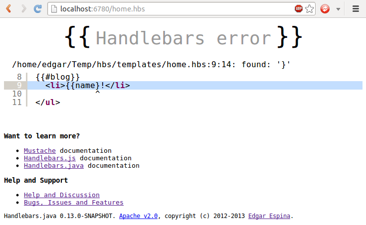

In this section you will learn to prototype web sites using the Handlebars.java Server!
Just click here for download the file.
java -jar handlebars-proto-{{page.version}}.jar [-option value]
text/html/6780/.hbs
java -jar handlebars-proto-{{page.version}}.jar -d site
<html>
<body>
<ul>
{{ "{{" }}#blogs}}
<li>{{ "{{" }}name}}</li>
{{ "{{" }}/blogs}}
</ul>
</body>
</html>
http://localhost:6780/home.hbs
So, is that all? No, the next section teach you how to add data to your templates.
{
"blogs": [
{
"name":"Handlebars.java"
}, {
"name":"Handlebars.js"
}, {
"name":"Mustache"
}
]
}
blogs:
- name: Handlebars.java
- name: Handlebars.js
- name: Mustache
By default the data file must match the template name and must be in the same directory.
dataparameter in the url.
http://localhost:6780/home.hbs?data=path/home2
Thedataparameter is a file path without a file extension.
Last but not least, let's see error reporting
Handlebars.java errors are reported through a fancy HTML page.
 Cool, isn't?